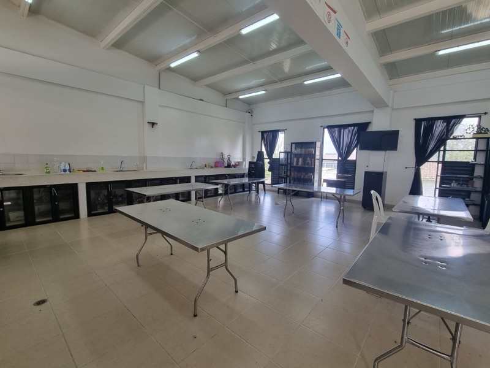
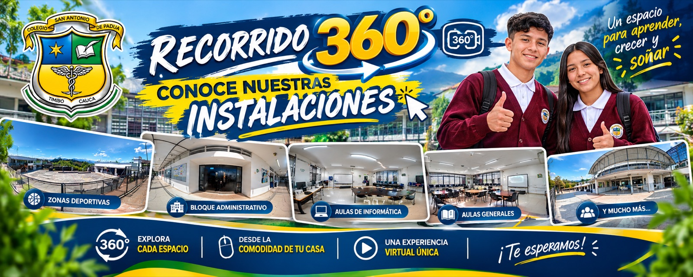
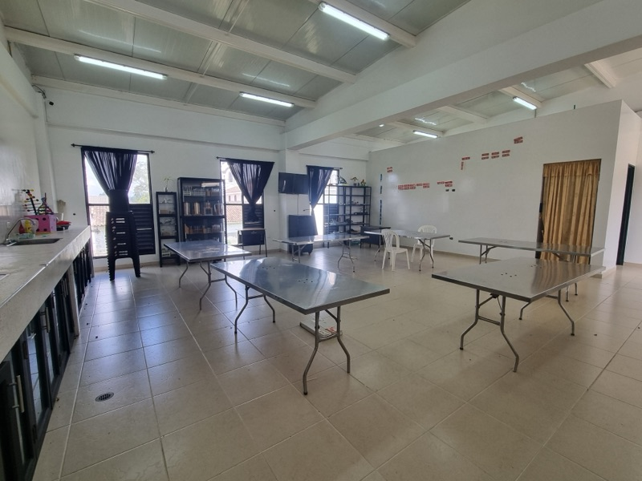
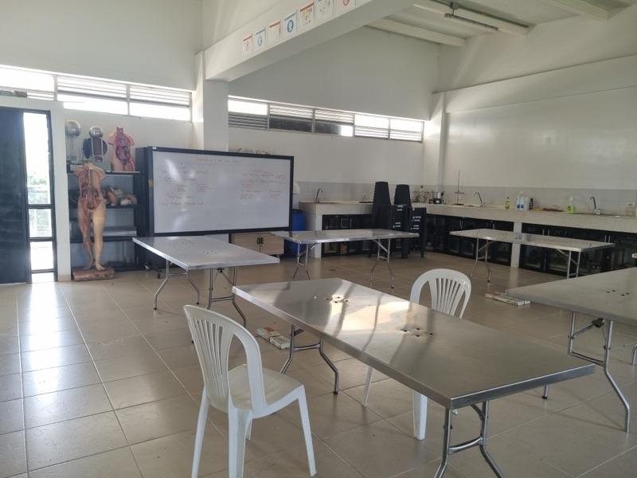
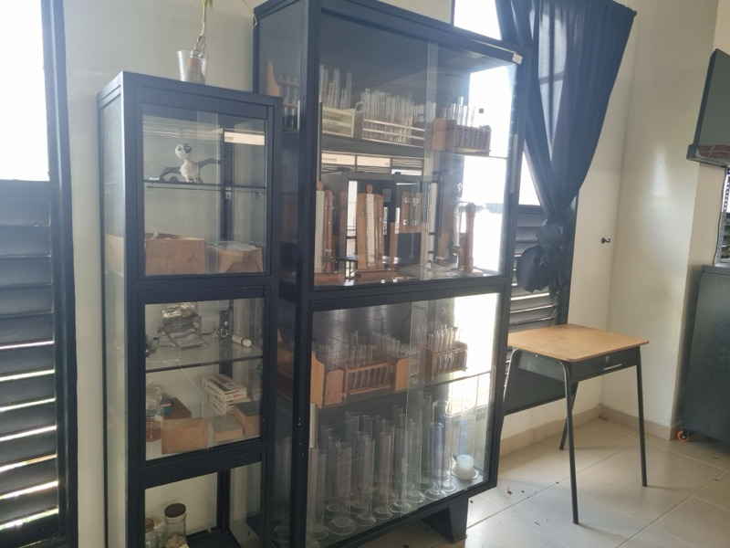
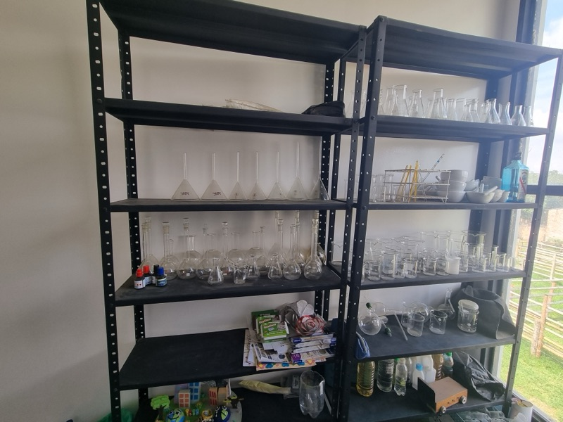
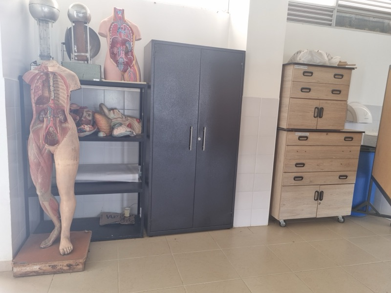

Recorrido 360°
El recorrido virtual 360° necesita JavaScript activado en el navegador.
Elige un espacio y explóralo en todas las direcciones.

Laboratorios

Conoce algunos de los espacios destinados al aprendizaje práctico y experimental de nuestros estudiantes.

Área de trabajo experimental

Ambiente para el aprendizaje de las ciencias
Laboratorio de ciencias



Espacio destinado al desarrollo de prácticas académicas y actividades experimentales, con mesas de trabajo, material de laboratorio, recursos didácticos y modelos anatómicos que apoyan el aprendizaje práctico y la comprensión de las ciencias.